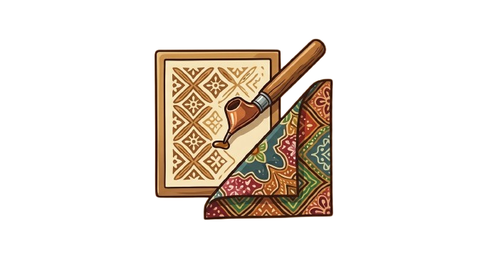
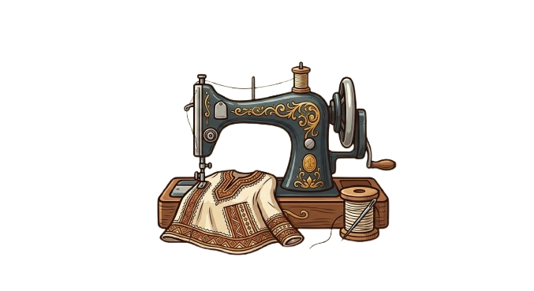
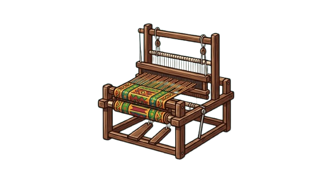
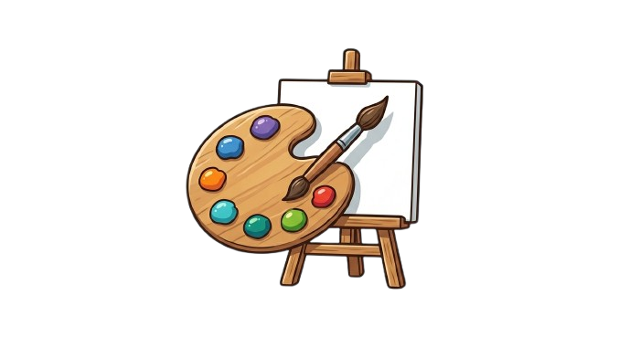
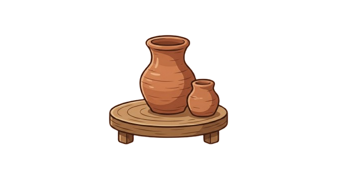
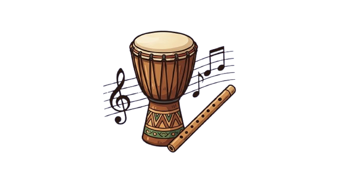

Cuisine
Formation en techniques culinaires, hygiène, recettes locales et innovantes.
Vous avez sélectionné une formation sur la page d'accueil. Retrouvez ici toutes les informations précises, les activités et les options de suivi.
Formation en techniques culinaires, hygiène, recettes locales et innovantes.

Création et teinture de tissus, motifs traditionnels et contemporains.

Patronage, confection, stylisme et mode éthique.
Modelage sur bois, pierre, métal, design d’objets décoratifs.

Techniques de tissage traditionnelles et créations textiles innovantes.

Atelier de peinture et peinture décorative inspirée de l’art local.

Modélisation de l’argile, cuisson en four et création d’objets en céramique.

Atelier de chant, percussions et rythmes locaux pour événements culturels.